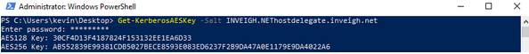

Kerberos Unconstrained Delegation Attack
With the above in place, we next need to sort out how to get the desired account traffic to the compromised host. For this first round, we’ll use tifkin’s printer bug to get a domain controller machine account to connect to our system over SMB. Additionally, we will be using the dev Branch version of Inveigh. Through packet sniffing, this version can grab SMB Kerberos TGT traffic and attempt to output a kirbi file for use with tools such as Mimikatz and Rubeus.
For Inveigh, we will need to have either the unconstrained delegation account’s AES256 hash or a PSCredential object with a Kerberos salt as the username. Shown below is the process of generating the correct AES256 hash using Powermad’s Get-KerberosAESKey function.

Note, Inveigh currently only supports AES256 Kerberos decryption.
Since we want to use our unconstrained delegation machine account’s SPN, we will need to have the target connect to the correct host name. For this example, I’ll use Dirk-jan‘s printerbug script from his recently released Krbrelayx toolkit.

At this point, let’s take a step back and go over the various SPNs in play. First, we have a compromised system running an SMB server as SYSTEM. This means that the SMB server will decrypt Kerberos tickets using the system’s machine account credentials. If we cause an SPN mismatch and attempt to perform Kerberos authentication with data encrypted under a different SPN, the SMB authentication will fail. However, the SMB server will not reject the authentication attempt until after the client has transmitted the AP-REQ.

More importantly for this scenario, the SMB server will reject the connection after receiving the TGT. Therefore, if we can grab the Kerberos traffic through packet sniffing, we can decrypt the needed data with the machine account credentials we have in our possession.

Note, using the SPN mismatch trick has a tendency to trigger multiple Kerberos authentication attempts from a client. I have Inveigh set to only output 2 kirbi files per user by default. Inveigh stores the rest in memory for access through Get-Inveigh.
Now that we have a kirbi TGT for the domain controller, we can pass it to Mimikatz and attempt a dcsync.

For another quick example, I used Inveigh to capture a Domain Administrator TGT over SMB.

Next, I used the kirbi file with Rubeus.

As a last example, below is Inveigh catching a TGT over HTTP.

HTTP may, in ideal conditions, remove the requirement for local administrator access on the compromised system.
Finally, the Kerberos unconstrained delegation technique above would also work well with the new krbrelayx toolkit.
One last word on SeEnableDelegationPrivilege + MAQ, fully setting up standard constrained delegation is usually out of reach due to the lack of write access to msDS-AllowedToDelegateTo.